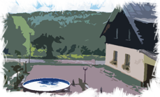

O akci
Téma, aneb o čem to bude...
Co všechno předurčuje v našem životě prostá věta kdesi na počátku: "je to kluk!“, „je to holka!“
Jsme jeden živočišný druh, jsme si na první pohled docela podobní a přitom ta věta představuje hranici dvou až neskutečně odlišných vesmírů.
Kolikrát v životě si myslíme, že jsme ten druhý vesmír již pochopili, že jej před sebou jasně vidíme a známe jeho tělesa. A kolikrát jsme však až krutě vyvedeni z omylu a „jejich“ svět nás zasáhne s takovou intenzitou, která nás zničuje.
Proč si „my muži“ a „my ženy“ spolu navzájem někdy tak samozřejmě rozumíme a jak je nemožné sdělit i jen málo někomu, kdo není taky chlap nebo ženská?
Pro nás je to neodolatelné tajemství a výzva. Výzva zkoumat a objevovat světy, které jsou neskutečně blízké a přesto nedosažitelné. Nabízíme vám příležitost hledat porozumění světům dvou rozdílných bytostí - mužů a žen. Pojďme je společně poodhalit a obohatit tak světy naše.
Připravujeme pro vás kurz, od kterého nečekejte žádné chytré řečičky, prázdné tlachání a zaručené rady o „těch druhých“. Bude to kurz, který upředeme, obohatíme a rozvineme ze zkušeností našich vlastních životů. Nabídneme vám silné zážitky pot, adrenalin, nezřízenou zábavu a možná i slzy. Bude to kurz o ženách bez žen a o mužích bez mužů, kurz o setkáních v pravou chvíli, kurz o dvou chalupách uprostřed dvou neprobádaných světů.
Metoda
Metoda zážitkové pedagogiky, je neobyčejně účinný způsob jak realizovat seberozvojové kurzy. Vychází z principu, že nejlépe se učíme z vlastní zkušenosti - a to ideálně v bezpečném prostředí. Je vhodná pro všechny, kteří jsou ochotní prožít a sdílet zážitky, byť ne úplně obvyklé.
Zážitkový kurz nabízí pečlivě připravenou a vyváženou mozaiku programů, u kterých nejde pouze o zábavné trávení času, ale hlavně o odhalení nových dosud nepoznaných schopností a jejich další rozvoj. Může jít o programy vyžadující týmovou spolupráci, rozšíření fyzických i psychických hranic, aktivity rozvíjející tvořivost, neobvyklé diskuze nebo prosté prožívání s dalšími lidmi. Metoda přitom klade důraz na propojení získaných zkušeností s reálným životem.
Účastník získává zážitky aktivním zapojením do připraveného programu. Přitom se setkává s různými situacemi, které zná z běžného života. V bezpečném prostředí kurzu má možnost získat zkušenost, jak v podobných situacích jednat. Průběh aktivit je zajišťován zkušenými instruktory. I velmi náročné programy jsou tak oproti skutečnosti relativně bezpečné, navíc je možné z programu, narozdíl od reality, kdykoliv vystoupit.
Klíčovou vlastností celého kurzu je dobrovolnost účasti na jakémkoliv programu. Zkušenost, kterou můžeme získat je však přímo úměrná energii, kterou do účasti na kurzu vložíme. Někdo tak může kurz prožít jako zábavný týden s novými přáteli, ale chcete-li bude to nezapomenutelné intenzivní setkání se světem okolo a hlavně se sebou samým.
Prakticky
Statistika
Kdy: 19.9. (začínáme večer) - 23.9.2012
Kde: Orlické hory
Pro: 16 žen a 16 mužů
Věk: 21 - 55 let
Cena: 2200,- Kč (studenti) / 2600,- Kč (ostatní)
Pokyny pro zaplacení vám zašleme po přihlášení na akci.
Co je a není zahrnuto v ceně

Ubytování
2 krásné chalupy s elektřinou, sprchou a pohodlnými postelemi. Stravování, náklady na přípravu, uvedení programů a jejich bezpečnost 24 hodin denně, náklady na nezbytný materiál, případné hosty a mnohá překvapení. V ceně není zahrnuto jízdné na akci a zpět.
Doprava na kurz
Podrobnosti se dozvíte před kurzem. Bude možné se dopravit auty i veřejnou dopravou.
Strava
Bude zajištěna po celou dobu akce našimi kuchaři, kteří se v tomto směru postarají o vaši maximální spokojenost. Budeme snažit vyjít vstříc i lidem s nestandardními stravovacími nároky, pro vegetariány budou k dispozici bezmasé verze všeho, co se bude podávat. Speciální dietní potřeby je možné domluvit předem. Najíme se povětšinou třikrát denně, jídelníček bude daleko více domácí, než hospodský.
Program
Prozradíme jen, že na zážitkových kurzech je více či méně strukturovaným programem naplněn prakticky celý den (obvykle cca 13-15 hodin denně). Jde o promyšlenou mozaiku nejrůznějších aktivit od tvořivých přes pohybové či sebepoznávací aktivity různé délky a intenzity, zahrnující celého člověka a ještě něco navíc.
U všech programů platí, že jsou zařazovány s jasnými cíly a s vědomím, že účastník má vždy svobodnou volbu účasti.
Náročnost akce a zdravotní stav
Kurz je připravován pro průměrně zdatné osoby. Fyzická náročnost se řídí možnostmi účastníků a každý účastník kurz po fyzické stránce zvládne, protože míru nasazení si určuje sám.
Tělesná a duševní námaha budou patrně často vyšší, než v běžném všedním dni, ale zároveň bude i daleko více prostoru pro aktivní odpočinek a regeneraci, než si dopřáváme v každodenní rutině. V případě, že trpíte nějakými závažnějšími zdravotními či psychickými obtížemi, kontaktujte nás a možnost účasti s námi konzultujte.
Na akci bude 24 hodin denně přítomen kvalifikovaný zdravotník a všichni instruktoři absolvovali kurz první pomoci. Před kurzem přijde přihlášeným k vyplnění zdravotní deklarace, která bude obsahovat důležité informace, pro náš individuální přístup.
Sportovní a jiné vybavení
Zvláštní vybavení k účasti na kurzu není potřeba. Základem jsou běžné věci nezbytné pro pobyt v přírodě. Seznam doporučených věcí dostanete včas před kurzem.
Tým
Marťule
Speciální pedagog se slabostí pro asociály. Lektorka pro děti. Nepoučitelná naivka milující toulky po horách, zpívání s pohledem do ohně, plavání a malé festivaly. Stále se učící býti pokornou, snažící se umět správně vidět a správně slyšet. Hledající podstatu existence a klid, že smrt je kámoška. Pokud mi nabídnete tatarák nebo burčák, neumím říct ne, ať je jakákoliv hodina.
U Instruktorů Brno jsem od roku 2007 a jsem za to a s nimi ráda. Rozdílnost mezi mužem a ženou je pro mě fascinující a zároveň mě někdy dost vytáčí. Je možné tomu všemu lépe porozumět a o to blíže mužům býti? Předešlá akce pouze pro ženy nás přivedla k tomu, že přirozeným vývojem je zrealizovat akci pro ženy i muže a nejen proto se s vámi všemi ráda uvidím na tomto kursu.
Vysněná dovolená…Na horách s koupandou v řekách a jezerech. Třetí rande…Dobré víno, procházka, při které se propovídáme až do nadrána, několik dlouhých polibků. Oblíbená dětská hra do deseti let…Na doktorku. Oblíbená místnost…Pracovno-ložnice - prosvětlený, kde je pohodlná postel, kytky, stolek s lampičkou, knížky a něco z čeho umí hrát hudba. Muž... Ten, který mě miluje, kterého si vážím, kterému se schovám do náruče, kdykoliv potřebuji. Pivo nebo víno…Jak kdy (Černý/Pálava).
Irča
Vystudovaná personalistka momentálně zajišťující chod malého rodinného hotelu v horách. Objevuje krásy přírody pešky, na kole i s rybami pod vodou. Neumí si představit život bez jahodové dřeně a rozhovorů s přáteli.
Akce O mužích a o ženách začala být zajímavá již při přípravách, kdy se tým složený z mužů a žen snažil shodnout na podobě této akce. Pojďte něco přidat a něco si odnést.
Vysněná dovolená - V krásné přírodě, na horách či v nížinách s člověkem či lidmi, které mám ráda. Třetí rande - Nádherné vzrušení a bušení srdce, dívaní se do očí, souznění, dlouhý polibek a… Oblíbená dětská hra do deseti let - Na školu, plížení se ve vysoké trávě a zatloukání hřebíků Oblíbená místnost - Pergola s výhledstrong na Buchlov. Muž - Odvážný, chytrý, vtipný, schopný činu. Pivo nebo víno - Pivo v létě na žízeň a víno k jakékoli příležitosti. Co jsem na mužích nikdy nepochopila. - Vše, co dělají je logicky zdůvodnitelné a proto jen málo věcí dělají jen pro pocit, ale není i za tím naším pocitstrong nějaký důvod? A také co všechno jsou schopni udělat pro sex. Co na mužích zbožňuji - Jejich mužnou náruč, jejich schopnost být oporou a schopnost zaujmout a pobavit. Rozmanitost způsobů, jakými dávají najevo své místo na světě (v tom krásném slova smyslu): když přidělávají poličku, když nacházejí správnou cestu podle mapy, když sestavují ložnici z milionu součástek…
Hanka
Pracující v jedné brněnské neziskové organizaci s lidmi s duševním onemocněním. Ráda přemýšlí a v duchu plánuje nenaplánovatelné, ráda čte, má ráda klasický papírový diář a k životu potřebuje spoustu malých barevnách lepících papírků. Ráda se kouká z kopců do údolí, která ji čekají. Je ještě pár dalších věcí, které se dlouhodobě nemění, všechno ostatní se vyvíjí.
Co se týká snah o pochopení druhého pohlaví, začaly když si uvědomila, že nemusí chápat, stačí když porozumí, když nerozumí stačí když to přijme a když to nepřijímá je ráda že je žena a že má intuici, která ji poradí co s tím dál.
Rozdílnost v asociacích Vysněná dovolená - pár týdnů toulání v našem pojízdném domečku nejlépe po zemi kde je moře, hory, louky i lesy, víno a olivy, vřeoviště a …zkrátka kdekoli, kde mám čas chvíli jen dýchat a snít a prožívat a být.
Třetí rande - Dobude mě nebo ne? A nechám ho? Svedu ho a nebo ne? Nechá mě? Oblíbená dětská hra do deseti let - skákání přes gumu Oblíbená místnost - u nás doma v zeleně vymalovaném zákoutí kuchyně s malou knihovnou a výhledem na stromy a zahradu Muž - On, mého srdce šampión. :o) Pivo nebo víno - pšeničné/bílé Co jsem na mužích nikdy nepochopila. Proč od ženy očekávají něhu a citlivost, když to pak neumí přijmout. Proč dělají všechny ty krásné věci okolo, když se chtějí se ženou jen vyspat. Co na mužích zbožňuji. Jejich chuť lovit, měnící se v podlehnutí. Jejich oholené tváře navoněné kolínskou. Jejich silné objímající paže a slova „pojď sem, všechno bude dobrý“ i když se rozpláču nad filmem.
Zuzka
Jsem různobarevná mozaika nálad, emocí, vlastností dobrých i špatných, převažující se jednou víc k dobrým jindy horším. Stvořená pro fyzioterapii, toulky v lese a horách, zpívání, malování, tančení, objevování nových koutů světa, šlápnutí do pedálů mého kola. Když mi dochází energie, nejlepším dobíjením baterek je pro mě jižní Morava- její písničky a Bílé Karpaty. Při vytváření akcí Trojjediná a ŽenaZeMě nám občas naskočily otázky, na které bychom rády znaly názory mužů. A proto mi přijde zajímavé hledat v čem jsou rozdílnosti mezi muži a ženami a je hezké, že jsme každý jiní, protože jinak by to byla nuda.
Vysněná dovolená…z Brna do Santiaga pěšky a sama Třetí rande…nemám paušální recept…Podle toho jaké jsou zrovna hvězdné konstelace. Oblíbená dětská hra do deseti let…na manželství Oblíbená místnost…přála bych si místnost vyzdobenou obrazy a vzpomínkami z cest… Muž…ochránce Pivo nebo víno…Obojíale ne dohromady Co jsem na mužích nikdy nepochopila. Nechápala jsem u mužů, co vlastně chtějí. Ale možná jsme spolu jen málo mluvili. Nebo mluvili dost, ale neposlouchali se. Co na mužích zbožňuji. Vůli jít za svým cílem a tu sílu a odhodlání, se kterou se pouští do realizace svých snů.
Raďa
15 let instruktor, pro radost pořádám zážitkové i vzdělávací akce pro všechny věkové kategorie. Mám rád překvapení, napětí, adrenalin, outdoor, pohyb a dobrodružství. Rád poznávám ženský svět a chci jej objevovat společně s vámi.
Vysněná dovolená… hory, hory, hory.. ležet v trávě na úbočí, dívat se do údolí hluboko pod sebou a cítit se jak v nebi Třetí rande… přivonět k vlasům, dlouhý polibek a naděje, že to bude pokračovat Oblíbená dětská hra do deseti let… na vojáky Oblíbená místnost… nemám oblíbenou místnost, mám oblíbená místa v místnostech… postel, gauč, vana.. a abych se jen neválel, tak i židle v kuchyni s výhledem z okna Žena… to je tajemství, vzrušení a dobrodružství.. nekonečné objevování a dobývání neznáma Pivo nebo víno… pivo s kamarády na žízeň, víno se ženou na příjemné společné uvolnění Co jsem na ženách nikdy nepochopil. Všechno co na ženách znám chápu, ale pořád je spousta věcí, které jsem na nich ještě nepoznal a těším se až je objevím, abych je mohl více pochopit. Co na ženách zbožňuji. Mohl bych napsat spoustu věcí vytržených z kontextu, třeba jak si přidržují sukni, když si sedají, jak si upravují hlasy, jak při sexu přivírají oči, ale nejlepší je, že prostě jsou a mohu objevovat a poznávat ten nekonečný, neuvěřitelně vzrušující, prostor ženského světa.

Gustav
Kráťa
Učitel na VŠ. Toho času intenzivně znovu objevuji dávno zapomenuté kouzlo ranného dětství díky dvěma malým ratolestem, které mi doma dávají jistotu vědomí toho, co že je na světe nejdůležitější. Miluji karetní hru Bang, vítr a píseň od Jiřího Korna o tom, že mám konečně povolání chlapské a učím křehké dámy windsurfing. Do divadla chodím jen na Cimrmana, ale chodím na něj s láskou a dobrovolně. Akce o mužích a ženách mi snad napomůže pochopit mimo jiná tajemství i proces proměny dívky v ženu, ženu v matku a další proměny, které budou následovat a tím i lépe reagovat na situace s těmito procesy spojené.
Vysněná dovolená…surfování na Tahiti s rodinkou a s mojí ženou přestrojenou za místní domorodkyni :o) Třetí rande…očekávám odpověď na největší otázku - zda bude vonět nebo ne. Oblíbená dětská hra do deseti let…Na schovávanou Oblíbená místnost…cukrárna s velkým výběrem zmrzliny Žena…jak řekl čínský filosof Konfucius: „ Sto mužů dokáže postavit tábor, jenom žena dokáže vytvořit domov“ Pivo nebo víno…co se týče těchto dvou nápojů, tak si připadnu trochu „zženštělý“, páč pivo kazím spritem, vůně bílého vína u mě vyvolává nepříjemné vzpomínky na zvracení z dávných dob a na červeném si nejlépe pochutnám, když ho smíchám s kolou. Co jsem na ženách nikdy nepochopil. Proč tak rychle spěchají z dětství do víru života. Co na ženách zbožňuji. Když nenosí podprsenku, ženskost, hezké chování k dětem, obejmutí v pravou chvíli, snesitelnou lehkost bytí, odvahu řídit velký auta, úsměv, umění flirtovat a jejich neskutečnou krásu při přípravě borůvkového táče.
Žížal
Zaměstnaný muž stále hledající a tápající v pestré směsi vůní, chutí a barev života. Plachtící na lodi vstříc obzorům, putující po horách s krásným výhledem, jezdící na bílých běžkařských stopách, sedící za volantem na nekonečně dlouhých cestách, řítící se na kole z prudkého svahu. Vždy se snažím zkusit všechno co se jen dá a co mi život nabízí a poslední dobou zjišťuji, že bych potřeboval ještě dva další životy abych to dokázal. Věřím, že právě při akci O mužích a ženách se mi podaří se zastavit, naslouchat, přemýšlet a hlavně pochopit proč se ten náš mužský svět od toho ženského zdánlivě tolik liší.
Vysněná dovolená - hlavně dlouhá s tím, že se nikdy a nikde ani na moment nestihnu zamyslet nad tím, co se děje v práci Třetí rande - dlouhý polibek a doufání, že se jí nebude chtít odejít domů stejně tak jako se nebude chtít odejít mně Oblíbená dětská hra do deseti let - hu-tu-tu-tu Oblíbená místnost - kuchyně a hlavně její jídelní kout Žena… věčná záhada a smysl bytí Pivo nebo víno - jasně, že pivo Co jsem na ženách nikdy nepochopil. proč kupují a shromažďují všechny ty krásné a báječné věci, které nám mužům připadají absolutně zbytečné a nezajímavé Co na ženách zbožňuji. jak se koukají, jak voní, jak mluví, jak poslouchají a především to, že dokáží vedle nás mužů žít
Chci jet
Registrační formulář
Ženy
O akci
Archeolog se hrabe v písku na poušti, když náhle narazí na láhev. Přetře ji a z láhve vystoupí džin.
"Vysvobodil jsi mě, splním Ti přání. Čehož si žádáš?" ptá se archeologa.
Archeolog se zamyslí, vzpomene si na Anglii, svou rodnou zemi. "Víš, džine, chtěl bych dálnici. Z pevniny na anglický kontinent. Čtyřproudovou. Nad mořem."
Džin na to: "Ses zbláznil? Vem si ty podmořské proudy, tu délku, přílivy, odlivy, tání ledovců... Ne, to nepůjde. To je moc náročný. Vymysli si něco jiného."Archeolog se zamyslí. Po chvíli přemýšlení zvolá: "Chtěl bych rozumět ženám!"
Džin se zarazí a pak se archeologa zeptá: "Kolika proudová jsi říkal, že má být ta dálnice?"
Je opravdu složité rozumět ženám? A rozumíme my mužům? Co nás činí odlišnými natolik, že se občas nechápeme? Mluvíme odlišnými jazyky a přitom myslíme totéž? Co je pro ženu automatické, nemusí být pro muže. Jsme sice jeden druh, ale dvě odlišné bytosti. A proto i naše akce probíhá paralelně se stejnou akcí pro muže. Chceme spolu s vámi hledat podstatu nás žen, sdílet zkušenosti o mužích a hledat, jak si lépe rozumět. Náš ženský tým pořádal dvě akce jenom o ženách (Ženu ZeMě a Trojjedinou), ale muži jsou nedílnou součástí našeho světa, a tak tato akce má být o to bohatší. Pokud vás láká, přihlaste se a pojeďte s námi. Sice jsme každá jiná, přesto některé zážitky a příhody zvláště s opačným pohlavím můžeme vnímat podobně.
Ženy
Jaká může být žena?
Ochránkyně domova
Domov vytvářím pro své nejdražší. Nejhezčí chvíle pro mě je, kdy se všichni spolu sejdeme.
Mám ráda akci
Nikdy se nenudím, pořád je co dělat a baví mě to.
Ztřeštěná
Zkoušely jste jíst placky se solí, česnekem a povidly? Nebo ve dvě ráno vyrazit na kopec? Doporučuji!
Sportovkyně
V žilách mi koluje adrenalin. V obědové pauze musím aspoň na brusle, nebo si zaběhat.!
Pečující o druhé
Ráda věnuji čas lidem kolem sebe. Vždycky vyslechnu jejich trápení podám pomocnou ruku.
Holka od rány
Pravdu řeknu narovinu a klidně drsně. S nikým si neberu servítky.
Na detailech záleží
Mám ráda dokonalost. Systém zkracuje dobu hledání. I každý detail má svoji důležitost v systému.
Pivo je můj chléb
Nejlepší filozofické debaty jsou s kámošema v hospůdce u piva.
Intelektuálka
V diskusi záleží na úhlu pohledu. Argumentací je ale možné najít podstatu věci.
Esoterická
I věci, které neumíme popsat, mohou existovat.
Emancipovaná
Zvládnu se o sebe postarat sama. Proč bych měla být na někom závislá?
Samotářka
Pro pohodu mi stačí kniha, nebo si jen tak sama vyrazit. Davy lidí nevyhledávám.
Romantička
Sním o muži, co dokáže napsat milou báseň, a co si se mnou vychutná vanu plnou růžových lístků. Proč bychom měli jen snít, když to krásné je všude kolem a můžeme ho realizovat?
Unikátní
Jsem originál!
Ženy
Inspirace v hudbě
Inspirace v knihách
Ženy, které běhaly s vlky - Clarissa Pinkola Estés Dvojí svět - Jaromír JanataDivadelní inspirace
Divadelní představení: Caveman - na motivy knihy Roba Beckera - Obhajoba jeskynního mužeMuži
Pokecáme o chlapských tématech...
Muži
...probereme život, ...
Chlapec
Když jsme malí, vše je jednoduché. Svět se zdá být tak laskavý a vstřícný. Nejvýznamnějšími osobnostmi našeho života jsou naši vlastní rodiče, sourozenci a především matka, nejvýznamnější žena, která nás dokáže pohladit a chápe nás takové jací jsme.
Mladík
Svět okolo se změnil. Naše pozornost se obrací směrem k ženské sukni, ale ne té maminčině, ale sukni spolužaček a kamarádek. Život se stane těžkým a plným nástrah. Musíme si sami razit svou vlastní cestu, ale stále nejsme sami, máme za zády opět mámu a tátu, kteří nás všemožně podporují a dokáží nám poradit.
Muž
Stavíme se na vlastní nohy. Rodiče nám už nepomáhají, je to jen na nás. Je třeba si vytyčit svůj vlastní prostor a jasně stanovit hranice. Ženy,práce a volný čas jsou pro nás jedny z nejdůležitějších esencí našeho života. Svatba, děti, rozvod, milenka, to vše nás může provázet. Není to jednoduchá cesta, ale každý ji máme takovou, jakou jsme si ji zvolili.
Stařec
Změna, která nastala je nepopsatelná. Děti odrostly, dostatek volného času, ale naše tělo už nezvládá to co dříve. Musíme si rozložit síly. Do života se konečně dostavila moudrost klid a pokora.Někomu se podaří sdílet poslední roky s některou z těch milujících bytostí, které nás provázely po celý život, ženou. Jiní zůstanou sami. Cesta byla dlouhá a kdo ví, zda-li je to její konec či začátek něčeho nového...
Muži
... kým jsme a můžeme být.
Každý muž nějaké vzory, každý muž si v sobě nese něco ze svých předků a každý muž má sen, za kterým kráčí.
Každý z nás má i nějaké temné komnaty, skryté touhy a potenciál sdílet svou zkušenost s dalšími muži.
Sdílení nás posouvá dopředu, motivuje nás i přináší spoustu huronského smíchu.
Těšíme se na tebe.